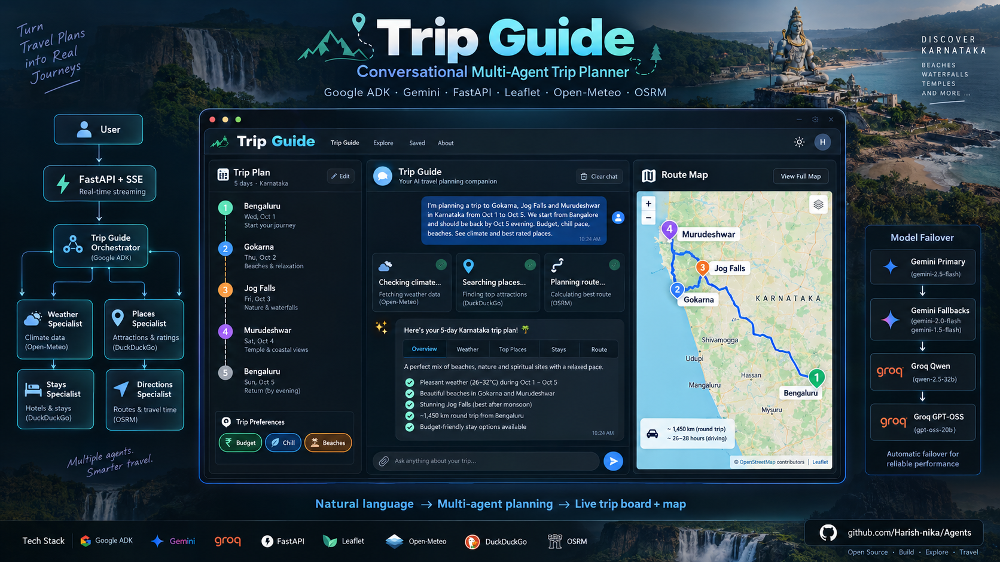
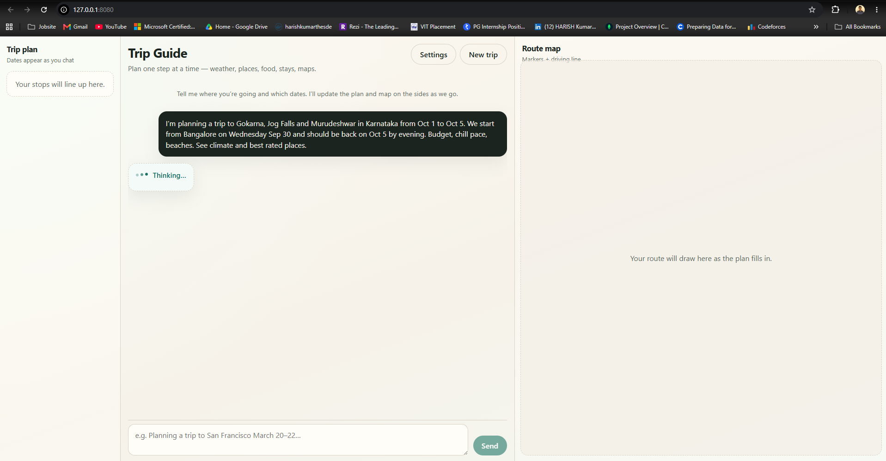
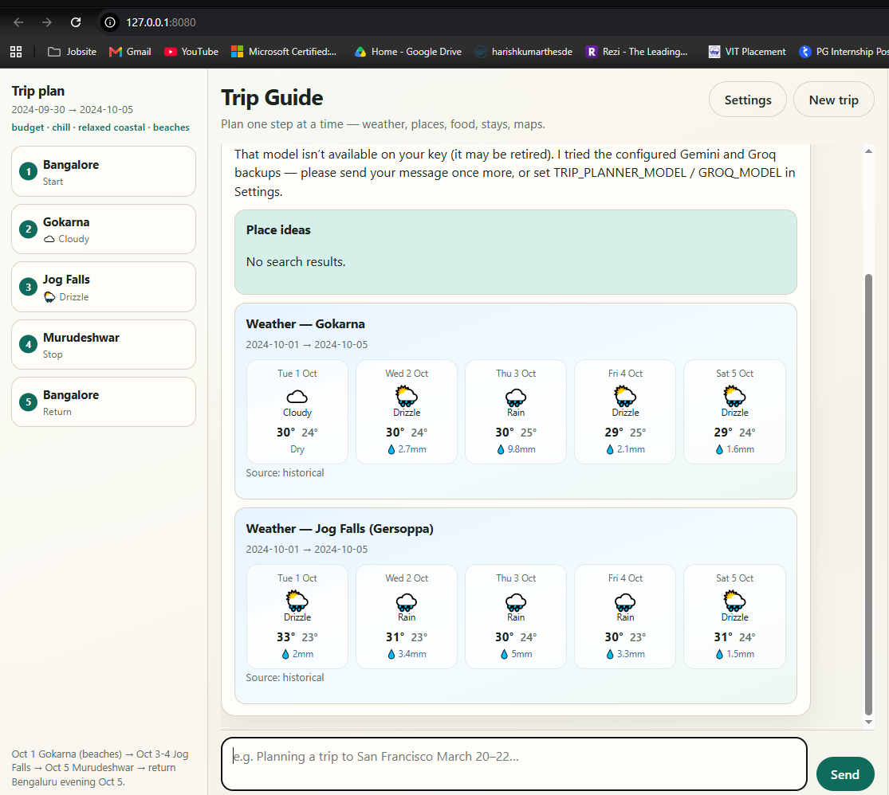
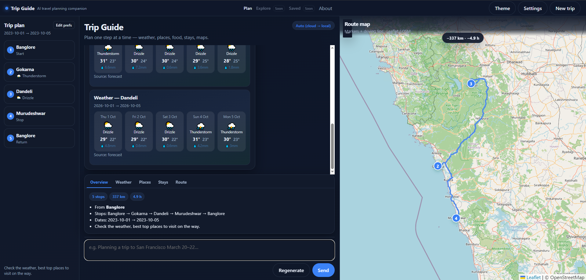

Trip Guide — Conversational Trip Planner
Multi-agent travel assistant with live trip board + map
- Google ADK orchestrator + specialists
- Gemini → Groq → Ollama failover
- SSE streaming chat
- Leaflet + OSRM free-stack maps
Trip Guide understands multi-stop trips from natural language, updates a live trip board + map, and delegates climate, places, and stays to specialist agents. Built with Google ADK on a mostly free stack (Open-Meteo, DuckDuckGo, OSM/OSRM, optional Groq). Part of the Agents monorepo alongside Recruiting Agent.
View architecture & UI ↓What it does

Architecture overview — FastAPI SSE, model failover, orchestrator + specialists, trip board and map
| Capability | Detail |
|---|---|
| Multi-stop NLU | Parses destinations, dates, prefs; tolerates typos (banglore → Bengaluru) |
| Trip spine | Ordered stops, dates, weather chips, click-to-focus on map |
| Route map | Numbered markers + driving polyline via public OSRM |
| Specialists | Climate (Open-Meteo), places/food/stays (DuckDuckGo + optional Compound) |
| Streaming UX | Status labels: Updating trip board… Checking climate… Searching places… |
| Model resilience | Gemini primary → Groq fallback → local Ollama last resort |
Monorepo context
Agents and agent types
Live chat uses one orchestrator + three specialists wired as ADK AgentTools
(not SequentialAgent/ParallelAgent on the UI path).
| Agent | Type | Job | Tools |
|---|---|---|---|
trip_guide |
Orchestrator | Understand trip, update UI state, delegate, merge reply | publish_trip_board, publish_trip_prefs, get_directions, AgentTools |
weather_specialist |
Specialist (AgentTool) | Climate for stops/dates | get_weather_for_dates, get_live_weather_forecast |
places_specialist |
Specialist (AgentTool) | Attractions / best-rated places | suggest_places, compound_research, web_search |
stays_specialist |
Specialist (AgentTool) | Food + lodging when asked | suggest_food, search_lodging, compound_research |
End-to-end planning flow
- User sends destinations, dates, prefs, and what they want (climate, places, …).
- SSE starts: UI shows Thinking… then tool status labels.
- Orchestrator calls
publish_trip_board→ left spine + map geocode/OSRM polyline. - If prefs stated →
publish_trip_prefs→ prefs strip (budget · chill · beaches). - Same turn: weather and/or places specialists (and stays if asked).
- Cards stream into chat; orchestrator writes a short merged answer.
- On Gemini failure (503/quota/timeout), chat service retries fallbacks then Ollama.
Model failover
| Order | Model | Role |
|---|---|---|
| 1–3 | Gemini Flash family | Primary + Gemini fallbacks |
| 4–5 | Groq Llama (tool-capable) | Cloud fallback when Gemini busy/quota |
| 6–7 | Ollama (local GPU) | Last resort tool-capable local models |
Three-column live UI
Left Trip plan spine · center Trip Guide chat · right Route map. Empty panels fill as the agent publishes the board, weather, places, and geometry.



Example prompt
Expect: prefs strip, trip spine, map route, weather cards, places with reference links.
Tech stack
| Layer | Technology |
|---|---|
| Agent runtime | Google ADK (Agent, AgentTool, Runner) |
| Primary LLM | Google Gemini (AI Studio) |
| Fallback LLM | Groq via ADK LiteLLM |
| Last-resort LLM | Local Ollama (tool-capable) |
| API | FastAPI + SSE (/api/chat/stream) |
| UI | Static HTML/CSS/JS — three-column shell |
| Map | Leaflet + OpenStreetMap tiles |
| Route geometry | Public OSRM (/api/trip/geometry proxy) |
| Weather | Open-Meteo (geocode + forecast/archive) |
| Places / food / stays | DuckDuckGo text search (+ optional Compound) |
Package layout
| Path | Role |
|---|---|
trip_planner/agents/ | Orchestrator + weather/places/stays specialists |
trip_planner/api/app.py | FastAPI chat + geometry + static UI |
trip_planner/runtime/chat_service.py | Sessions, SSE, model failover |
trip_planner/tools/ | Weather, maps, search, board, prefs |
web/ | Three-column Leaflet UI |
Quick start
.env.
Set TRIP_PLANNER_SKIP_GEMINI=1 when free-tier Gemini quota is exhausted;
set TRIP_PLANNER_PREFER_OLLAMA=1 to try local GPU before cloud APIs.